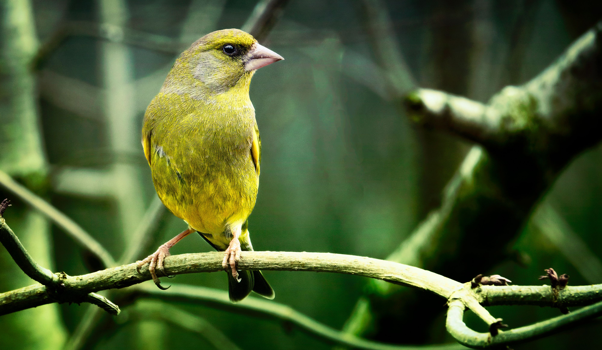

The European Greenfinch is a stocky finch with predominantly green and yellow plumage, a stout pale bill, and bright yellow markings on the wings and tail. It is a familiar bird of gardens, farmland, hedgerows, parks, villages, and open woodland. Greenfinches feed mainly on seeds and plant material, using their powerful bills to handle relatively large seeds. They may gather in flocks outside the breeding season and frequently visit garden feeders. Compared with the European Goldfinch, the Greenfinch is larger and lacks the Goldfinch's red face and black-and-white head, instead showing mostly green plumage with yellow wing and tail patches. It can also be distinguished from the Common Chaffinch by its greener body, heavier bill, and yellow wing markings. Greenfinch populations in some European regions have been affected by the disease trichomonosis, particularly around garden feeding sites.